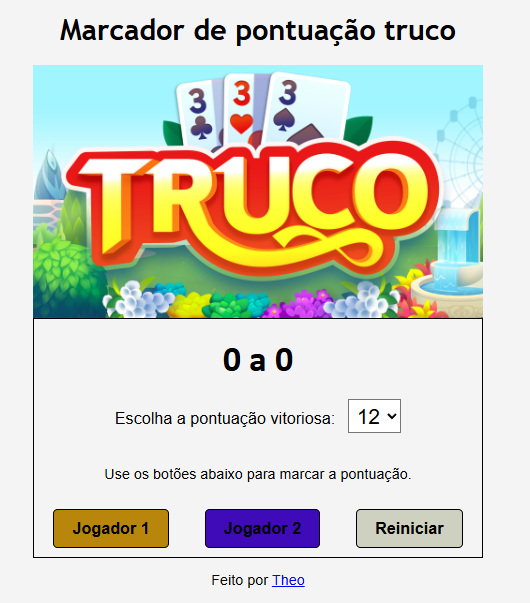
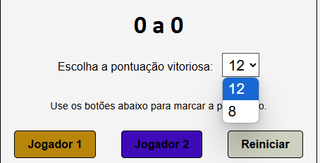

Marcador de Pontuação - Truco
Descrição do projeto
O "Marcador de Pontuação - Truco" é um projeto web interativo desenvolvido para registrar o placar de uma partida de truco, com suporte para escolha de pontuação máxima e controle de pontuação por botões.
Foi implementado em HTML, CSS e JavaScript puros. O usuário pode selecionar a pontuação final desejada (8 ou 12 pontos) e utilizar botões para registrar pontos dos dois jogadores, além de um botão para reiniciar a partida.
O layout é responsivo e utiliza Flexbox para organizar os controles. Estilos personalizados destacam os pontos de cada jogador e indicam claramente o vencedor com cores. Todo o estilo visual foi feito sem bibliotecas externas, respeitando a simplicidade e clareza de uso.
Esse projeto mostra domínio de manipulação do DOM, eventos, controle de estado do jogo e boas práticas de CSS.
← Voltar ao portfolio